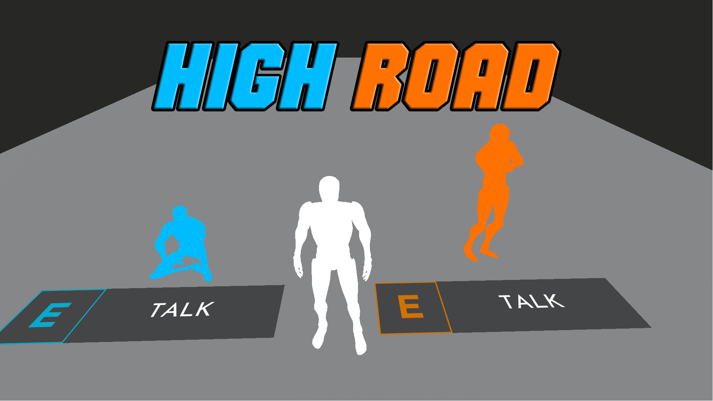

TL;DR, I'm just a nerd.
Designer, writer, and storyteller building worlds where conflict and harmony collide. Welcome to Wabu Games — my home for making meaning through play.
Projects

Strife & Serenity
Narrative-driven action RPG about balance through conflict.

Cthulhu’s Cat Sitter
Cozy chaos management game with cosmic consequences.
Mark of Mastery
Fast-paced combat and skill growth rooted in purpose.

Stonespoke
Atmospheric puzzle adventure exploring forgotten echoes.
High Road
Mystery platformer about trust, stealth, and emotional resolve.
About Me
I'm Tobi Adefidiya — a Game Designer and Narrative Designer passionate about exploring the tension between conflict and peace. My goal is to create meaningful player experiences that challenge perception and provoke reflection through systems and storytelling.
Resume
A snapshot of my journey through interactive media, game design, and storytelling. Explore my resume to see the path that shaped my approach to designing meaning through play.